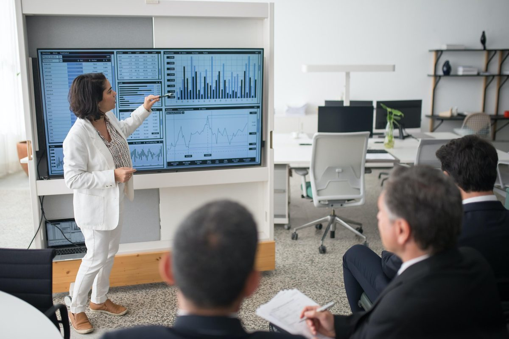

Proven in the field
Case Studies
Real engagements with banks, central banks, regulators, sovereign investors and major corporates across the Gulf. Client names withheld for confidentiality.
A leading Saudi bank wins a national Best Graduate Training Award with specialist graduate cohorts
Challenges
- Build job-ready cybersecurity and Data/AI talent from fresh graduates
- Screen large applicant pools objectively for two technical tracks
- Combine technical depth with the behavioral skills banks require
Solution
- 1-year Graduate Program across two cohorts: Cybersecurity and Data & AI
- Technical screening assessments to select each cohort
- Specialized learning paths with labs, certifications, and technical and behavioral training
Results
Winner
National Best Graduate Training Award, 2025
2 Cohorts
Cybersecurity and Data/AI specialist tracks delivered
End-to-End
Screening 200+ candidates, labs, certification and behavioral development
Results
2 Programs
Custom-built for the central bank
3 Phases
Structured, progressive delivery per program
40+ Staff
Trained across inspection, supervision and analysis
A Gulf central bank builds its inspection and supervision capability with two phased programs
Challenges
- Upskill the inspection and supervision team on a consistent framework
- Extend financial analysis capability across all departments
- Deliver in structured phases that fit regulator schedules
Solution
- 3-phased Bank Inspector Program customized for the inspection and supervision team
- 3-phased Financial Analysis Program customized for staff across all departments
- Practitioner-led delivery grounded in real supervisory casework
A major Saudi bank transforms frontline capability country-wide across 750+ employees
Challenges
- Lift customer service, sales and product knowledge across the whole network
- Serve very different seniority levels with one coherent program
- Sustain momentum over a multi-year transformation
Solution
- Country-wide skills training in customer service, sales, wealth management and banking products
- Content customized for different levels, from frontline to management
- Multi-year rollout (2025–2027) with phased delivery
Results
750+ People
Employees in scope, country-wide
4 Skill Areas
Customer service, sales, wealth management & banking products
2025–27
Sustained multi-year engagement

Results
2 Markets
China and Japan, covered in depth
Full Cycle
Analysis, portfolio construction, valuation, market outlook
Executive
Cohort of senior investment professionals
A sovereign wealth fund sharpens senior investors on China and Japan through an executive equity simulation
Challenges
- Deepen senior-level conviction on Asian equity markets
- Cover the full investment process, not isolated topics
- Learn by doing — simulation, not lectures
Solution
- Executive-level equity investment simulation focused on Chinese and Japanese markets
- End-to-end coverage: investment analysis, portfolio construction and valuation
- Market outlook sessions tailored for senior investment professionals
The depth behind the headlines
Track Record 2023–24
A selection of engagements delivered across banks, regulators, sovereign investors, government entities and corporate groups in energy, industry and consumer sectors.
2024
A Qatari Islamic bank — AML/CFT Program, 50+ participants across retail, corporate, remittance, operations and senior management
A Gulf financial regulator — 3-phased Financial Services Risk and Accounting Program for regulators
A leading Saudi bank — 5-day Customer Care Development Program: products, communication, sales, complaints
A UAE environmental services group — 3-phased Production Planning & Control Program with cases built on the client's own facilities
A sovereign wealth fund — Internship Program with gamified simulations across SWFs, portfolio, equity and fixed income
A UAE government finance department — GenAI, chatbot creation and prompt engineering workshops
2023
A sovereign holding company — 6-month CFA Level 1 & 2 Program for 20+ participants
A leading Saudi bank — 1-month Retail Mid-Management Program: project management, data analytics, digital banking, leadership
A leading Kuwaiti bank — Digital Transformation Graduate Program, 15+ participants
A UAE commercial bank — Graduate Program with personalized development plans for 20+
A major UAE bank — CISI exam training (IISI, ICWIM, UAE FRR), 100+ participants across the year
Gulf regulators & academies — Digital Assets Awareness cohorts and the CFA ESG Investing module
Ready to build your program?
Every engagement above started with a conversation about your goals.
Contact Us